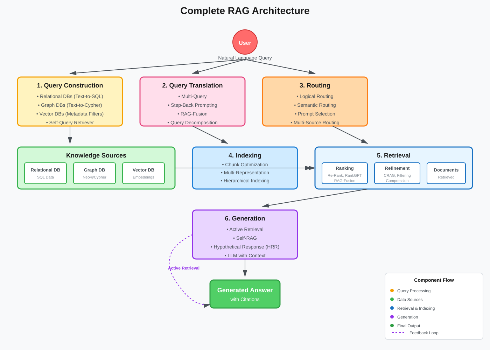
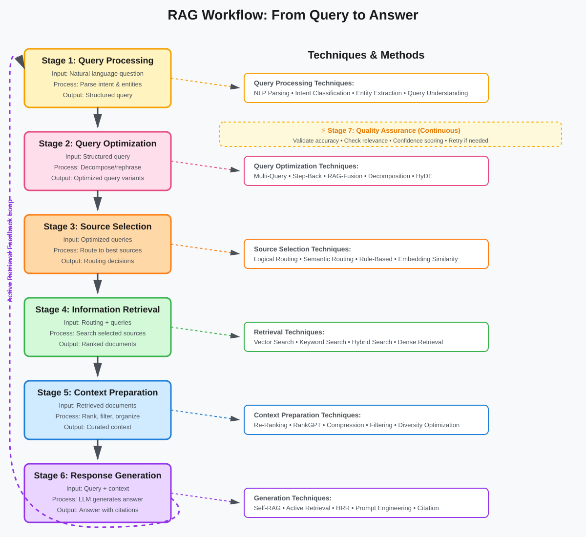
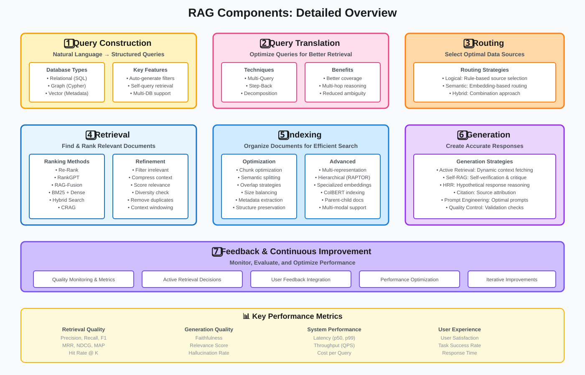
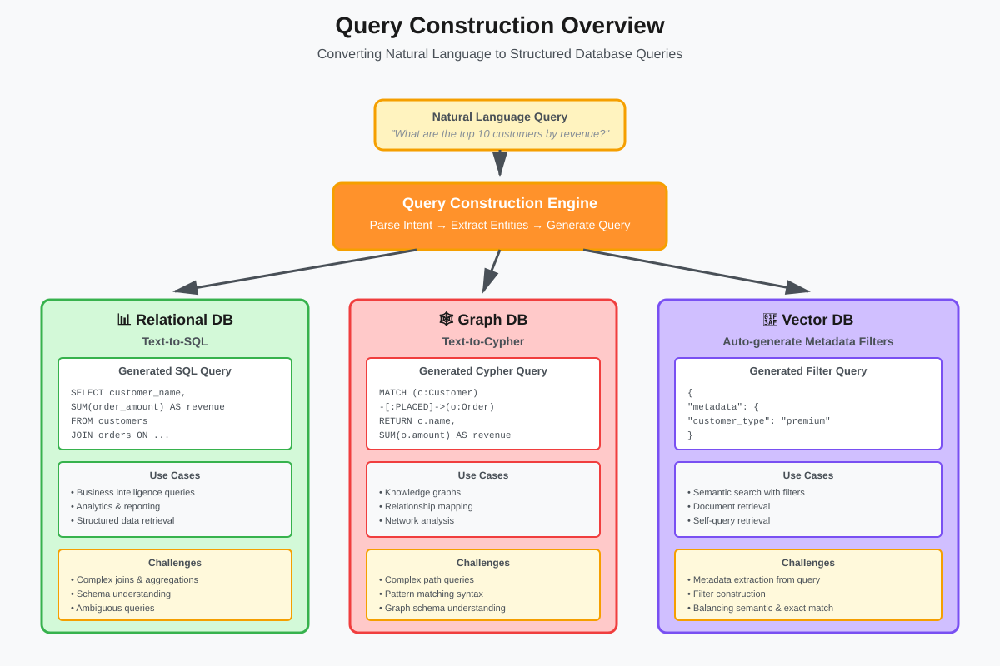
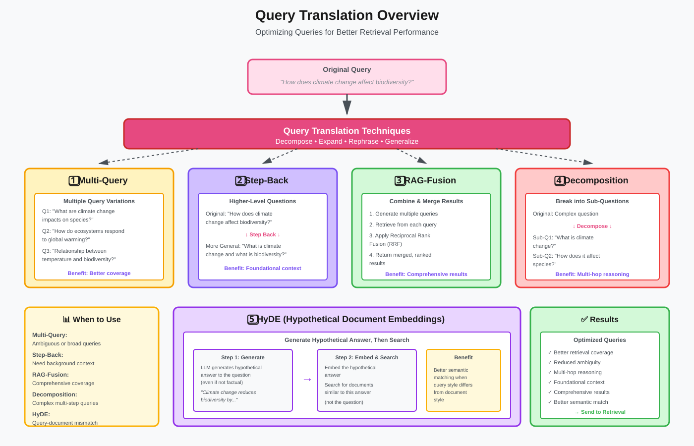
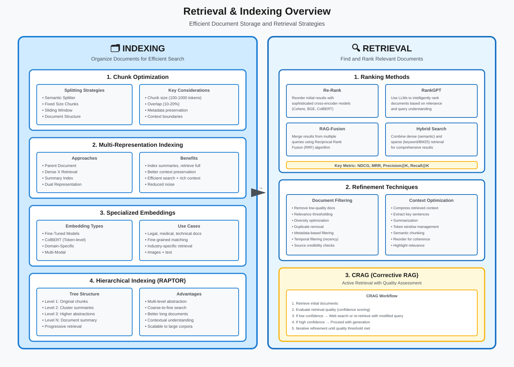
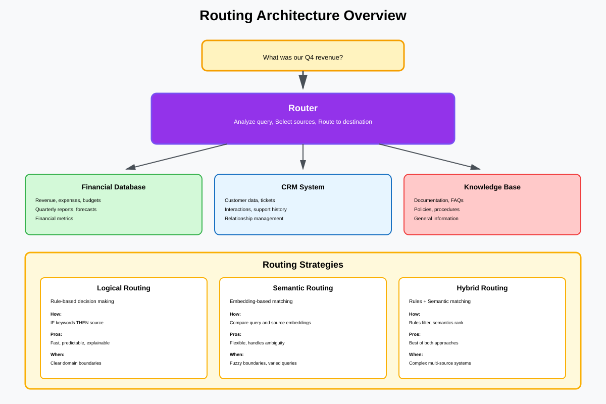

Retrieval-Augmented Generation (RAG) - Complete Architecture Overview
A Comprehensive Guide to RAG Architecture and Components
📚 Quick Navigation
- Introduction
- What is RAG?
- Complete Architecture Diagram
- RAG Workflow
- Core Components Overview
- Query Construction Overview
- Query Translation Overview
- Retrieval & Indexing Overview
- Routing & Generation Overview
- Why RAG Matters
- Use Cases
- Getting Started
- References & Further Reading
Introduction
Retrieval-Augmented Generation (RAG) represents a paradigm shift in how we build intelligent systems that combine the power of large language models with external knowledge retrieval. This comprehensive guide provides a complete overview of RAG architecture, covering all major components and their interactions.
What You'll Learn:
- Complete RAG architecture and workflow
- Overview of all seven major components
- How components interact in a RAG system
- When to use different RAG approaches
- Real-world applications and use cases
What is RAG?
Retrieval-Augmented Generation is an AI framework that enhances large language models by retrieving relevant information from external knowledge sources before generating responses.
Key Concepts:
- Retrieval: Finding relevant documents or information from a knowledge base
- Augmentation: Enhancing the LLM's context with retrieved information
- Generation: Producing responses based on both the query and retrieved context
- Knowledge Base: External data sources (databases, documents, APIs)
- Embedding Models: Neural networks that convert text into vector representations
- Vector Stores: Specialized databases for efficient similarity search
RAG vs Traditional LLMs:
- Traditional LLMs: Limited to training data, prone to hallucination
- RAG Systems: Access to up-to-date information, grounded in factual sources
- Hybrid Approach: Combines parametric knowledge with non-parametric retrieval
Benefits of RAG:
- Reduced Hallucinations: Responses grounded in retrieved documents
- Up-to-date Information: Access to current data beyond training cutoff
- Source Attribution: Can cite specific documents and sources
- Cost-Effective: No need to retrain models for new information
- Domain Specialization: Easy to adapt to specific knowledge domains
- Scalability: Knowledge base can grow without model retraining
Complete Architecture Diagram
The RAG architecture consists of seven interconnected components that work together to process queries and generate accurate responses.

Architecture Components:
- Query Construction: Converting natural language to structured queries
- Query Translation: Transforming queries for better retrieval
- Routing: Directing queries to appropriate data sources
- Retrieval: Finding relevant information from knowledge bases
- Indexing: Organizing and storing documents efficiently
- Generation: Creating responses using LLMs and retrieved context
- Feedback Loop: Continuous improvement through active retrieval
Data Flow:
- User submits natural language query
- Query construction converts to structured format
- Query translation optimizes for retrieval
- Routing selects appropriate data sources
- Retrieval fetches relevant documents
- Generation creates response with context
- Response returned to user
RAG Workflow
Understanding the complete workflow is essential for implementing effective RAG systems.

Workflow Stages:
1. Query Processing:
- Input: Natural language question from user
- Processing: Parse and understand user intent
- Output: Structured query representation
- Techniques: NLP parsing, intent classification, entity extraction
2. Query Optimization:
- Input: Structured query
- Processing: Decompose, rephrase, or expand query
- Output: Optimized query variants
- Techniques: Multi-query, step-back, RAG-Fusion
3. Source Selection:
- Input: Optimized queries
- Processing: Determine best data sources
- Output: Routing decisions
- Techniques: Logical routing, semantic routing, hybrid routing
4. Information Retrieval:
- Input: Routing decisions and queries
- Processing: Search across selected sources
- Output: Ranked relevant documents
- Techniques: Vector search, keyword search, hybrid search
5. Context Preparation:
- Input: Retrieved documents
- Processing: Rank, filter, and organize context
- Output: Curated context for generation
- Techniques: Re-ranking, compression, summarization
6. Response Generation:
- Input: Original query + curated context
- Processing: LLM generates response
- Output: Final answer with citations
- Techniques: Prompt engineering, self-RAG, active retrieval
7. Quality Assurance:
- Input: Generated response
- Processing: Validate accuracy and relevance
- Output: Verified response or retrieval retry
- Techniques: Self-verification, confidence scoring
Core Components Overview
Each component plays a critical role in the RAG pipeline. Here's a high-level overview of all seven components.

Component Summary:
1. Query Construction:
- Converts natural language to database queries
- Supports SQL, Cypher, and vector queries
- Enables structured data access
- Handles multiple database types
2. Query Translation:
- Optimizes queries for better retrieval
- Creates multiple query variants
- Handles complex multi-hop questions
- Improves recall through decomposition
3. Routing:
- Directs queries to appropriate sources
- Logical and semantic routing strategies
- Handles multi-source scenarios
- Optimizes for speed and accuracy
4. Retrieval:
- Fetches relevant documents
- Implements ranking algorithms
- Performs document refinement
- Supports multiple retrieval strategies
5. Indexing:
- Organizes documents for efficient search
- Chunk optimization techniques
- Multi-representation indexing
- Hierarchical document structures
6. Generation:
- Creates final responses
- Incorporates retrieved context
- Self-verification mechanisms
- Adaptive retrieval strategies
7. Feedback & Iteration:
- Continuous improvement loop
- Active retrieval when needed
- Quality monitoring
- Performance optimization
Query Construction Overview
Query Construction is the first step in translating user intent into actionable database queries.

Query Construction Types:
Relational Database Queries:
- Text-to-SQL: Convert natural language to SQL queries
- Use Cases: Structured data, business intelligence, analytics
- Challenges: Complex joins, aggregations, nested queries
- Tools: LangChain SQL chains, semantic parsing models
Graph Database Queries:
- Text-to-Cypher: Generate graph queries from text
- Use Cases: Knowledge graphs, relationship mapping, network analysis
- Challenges: Complex path queries, pattern matching
- Tools: Neo4j, graph query generators
Vector Database Queries:
- Auto-generate Metadata Filters: Create filters from natural language
- Use Cases: Semantic search, similarity matching
- Challenges: Metadata extraction, filter construction
- Tools: Pinecone, Weaviate, Qdrant filters
Self-Query Retrieval:
- Combined Approach: Semantic search + metadata filtering
- Benefits: More precise results, better context understanding
- Implementation: Separate content and metadata queries
For detailed information, see: Query Construction Deep Dive
Query Translation Overview
Query Translation optimizes the original query to improve retrieval quality and coverage.

Query Translation Techniques:
Multi-Query:
- Approach: Generate multiple variations of the original question
- Benefits: Captures different perspectives and phrasings
- Use Cases: Ambiguous queries, comprehensive search
- Example: "What is climate change?" → Multiple focused sub-queries
Step-Back Prompting:
- Approach: Create higher-level, more general questions
- Benefits: Retrieves broader context and foundational information
- Use Cases: Complex questions needing background knowledge
- Example: "How does protein X affect cell Y?" → "What are proteins and cells?"
RAG-Fusion:
- Approach: Combine multiple query strategies and merge results
- Benefits: Comprehensive coverage, reduced missing information
- Use Cases: Research, complex information needs
- Implementation: Reciprocal Rank Fusion (RRF) for result merging
Query Decomposition:
- Approach: Break complex questions into simpler sub-questions
- Benefits: Handles multi-hop reasoning, easier retrieval
- Use Cases: Complex analytical questions, multi-step reasoning
- Example: "Compare A and B" → "What is A?" + "What is B?" + "Compare results"
Hypothetical Document Embeddings (HyDE):
- Approach: Generate hypothetical answer, then search for similar documents
- Benefits: Better semantic matching, overcomes query-document mismatch
- Use Cases: When queries differ in style from documents
For detailed information, see: Query Translation Deep Dive
Retrieval & Indexing Overview
Retrieval and Indexing work together to efficiently store and retrieve relevant information.

Retrieval Methods:
Ranking Strategies:
- Re-Rank: Reorder initial results using more sophisticated models
- RankGPT: Use LLMs for intelligent ranking
- RAG-Fusion: Merge results from multiple queries
- CRAG: Corrective RAG with active retrieval
Refinement Techniques:
- Document Filtering: Remove irrelevant or low-quality documents
- Context Compression: Reduce token count while preserving information
- Relevance Scoring: Quantify document relevance
- Diversity Optimization: Ensure varied perspectives
Indexing Techniques:
Chunk Optimization:
- Semantic Splitter: Split based on meaning, not just length
- Conversion Matters: Preserve document structure and formatting
- Fixed vs Dynamic: Balance between consistency and flexibility
- Overlap Strategies: Handle context boundaries
Multi-Representation Indexing:
- Parent Document: Index summaries, retrieve full documents
- Dual Representation: Separate indexing and retrieval representations
- Dense X Retrieval: Multiple dense representations per document
Specialized Embeddings:
- Fine-Tuned Models: Domain-specific embedding models
- ColBERT: Token-level similarity matching
- Multi-Modal: Handle text, images, tables
Hierarchical Indexing:
- RAPTOR: Tree of document summarizations
- Hierarchical Structure: Multiple levels of abstraction
- Progressive Retrieval: Coarse-to-fine search
For detailed information, see: Retrieval Deep Dive | Indexing Deep Dive
Routing & Generation Overview
Routing and Generation complete the RAG pipeline by selecting sources and creating responses.

Routing Strategies:
Logical Routing:
- Approach: Use rules and logic to select data sources
- Benefits: Predictable, explainable, fast
- Use Cases: Well-defined domains, structured decision trees
- Example: Route financial queries to financial database
Semantic Routing:
- Approach: Use embedding similarity to route queries
- Benefits: Handles ambiguous cases, learns from data
- Use Cases: Multi-domain systems, fuzzy boundaries
- Implementation: Prompt #1 vs Prompt #2 similarity comparison
Generation Process:
Active Retrieval:
- Approach: Retrieve additional context during generation if needed
- Benefits: Dynamic information gathering, better accuracy
- Use Cases: Complex questions, insufficient initial context
- Techniques: Self-ask, retrieval-aware generation
Self-RAG:
- Approach: LLM decides when to retrieve and generates self-critiques
- Benefits: Quality control, reduced hallucinations
- Use Cases: High-stakes applications, accuracy-critical systems
- Components: Retrieval decisions, relevance checks, support verification
Hypothetical Response Reasoning (HRR):
- Approach: Generate hypothetical answers to guide retrieval
- Benefits: Better query-document matching
- Use Cases: Abstract or conceptual queries
For detailed information, see: Routing Deep Dive | Generation Deep Dive
Why RAG Matters
RAG systems address critical limitations of standalone LLMs and traditional search systems.
Key Advantages:
1. Accuracy & Factuality:
- Problem: LLMs can hallucinate or provide outdated information
- RAG Solution: Ground responses in retrieved factual documents
- Impact: Significantly reduced hallucinations, verifiable answers
2. Up-to-Date Information:
- Problem: LLM training data has cutoff dates
- RAG Solution: Access current information from live data sources
- Impact: Always current responses, real-time data integration
3. Domain Specialization:
- Problem: General-purpose LLMs lack deep domain expertise
- RAG Solution: Connect to domain-specific knowledge bases
- Impact: Expert-level responses without model retraining
4. Source Attribution:
- Problem: Black-box LLM responses lack transparency
- RAG Solution: Cite specific documents and sources
- Impact: Verifiable, trustworthy, auditable responses
5. Cost Efficiency:
- Problem: Retraining LLMs is expensive and time-consuming
- RAG Solution: Update knowledge base without model changes
- Impact: Lower operational costs, faster iteration
6. Privacy & Control:
- Problem: Sensitive data cannot be included in model training
- RAG Solution: Keep proprietary data in secure, private databases
- Impact: Enterprise-ready, compliant systems
7. Scalability:
- Problem: LLMs have fixed knowledge capacity
- RAG Solution: Unlimited knowledge base growth
- Impact: Scales with business needs
Use Cases
RAG systems power a wide range of applications across industries.
Enterprise Applications:
Customer Support:
- Use Case: Intelligent chatbots with access to documentation
- Components: Document retrieval, answer generation, ticket routing
- Benefits: 24/7 support, consistent answers, reduced costs
- Example: Technical support bot with product manuals
Internal Knowledge Management:
- Use Case: Employee assistance with company policies and procedures
- Components: Document indexing, semantic search, summarization
- Benefits: Faster onboarding, reduced information silos
- Example: HR assistant for benefits and policy questions
Research & Development:
Scientific Research:
- Use Case: Literature review and hypothesis generation
- Components: Paper retrieval, citation extraction, synthesis
- Benefits: Accelerated research, comprehensive coverage
- Example: Biomedical research assistant with PubMed integration
Legal Research:
- Use Case: Case law analysis and legal document preparation
- Components: Legal document retrieval, precedent analysis
- Benefits: Faster research, comprehensive case coverage
- Example: Legal research assistant with case databases
Content & Media:
News & Journalism:
- Use Case: Fact-checking and background research
- Components: News archive retrieval, source verification
- Benefits: Accurate reporting, efficient research
- Example: Journalist assistant with news archives
Content Creation:
- Use Case: Research-backed content generation
- Components: Source retrieval, fact verification, citation
- Benefits: Authoritative content, proper attribution
- Example: Blog writing assistant with research capabilities
E-Commerce & Retail:
Product Recommendations:
- Use Case: Personalized product suggestions based on inventory
- Components: Product database, user preference matching
- Benefits: Better conversions, improved customer satisfaction
- Example: Shopping assistant with real-time inventory
Education & Training:
Intelligent Tutoring:
- Use Case: Personalized learning with educational content
- Components: Curriculum retrieval, adaptive questioning
- Benefits: Personalized learning paths, comprehensive coverage
- Example: Math tutor with textbook integration
Healthcare:
Clinical Decision Support:
- Use Case: Evidence-based medical recommendations
- Components: Medical literature retrieval, guideline matching
- Benefits: Evidence-based care, reduced errors
- Example: Clinical assistant with medical guidelines
Getting Started
Prerequisites:
- Basic understanding of LLMs and embeddings
- Python programming knowledge
- Familiarity with vector databases
- Understanding of API integration
Essential Tools & Libraries:
Framework Options:
- LangChain: Comprehensive RAG framework with extensive integrations
- LlamaIndex: Specialized for data ingestion and indexing
- Haystack: Production-ready RAG pipelines
- AutoGen: Multi-agent RAG systems
Vector Database Options:
- Pinecone: Managed vector database, easy to use
- Weaviate: Open-source with advanced features
- Qdrant: High-performance vector search
- Chroma: Lightweight, embedded option
- FAISS: Facebook's similarity search library
Embedding Models:
- OpenAI Embeddings: High-quality, easy to use
- Sentence-Transformers: Open-source, customizable
- Cohere Embeddings: Multilingual support
- Instructor Embeddings: Task-specific embeddings
LLM Options:
- GPT-4/GPT-3.5: OpenAI models via API
- Claude: Anthropic's models with long context
- Llama 2: Open-source Meta model
- Mistral: Open-source, high-performance
Basic Implementation Steps:
Step 1: Document Preparation
# Load and preprocess documents
documents = load_documents("path/to/docs")
chunks = split_documents(documents, chunk_size=500, overlap=50)
Step 2: Create Embeddings
# Generate embeddings for chunks
embeddings = embedding_model.embed(chunks)
Step 3: Store in Vector Database
# Index embeddings in vector store
vector_store.add(embeddings, chunks, metadata)
Step 4: Implement Retrieval
# Query the vector store
query_embedding = embedding_model.embed(user_query)
relevant_docs = vector_store.search(query_embedding, top_k=5)
Step 5: Generate Response
# Create context and generate answer
context = "\n".join([doc.content for doc in relevant_docs])
prompt = f"Context: {context}\n\nQuestion: {user_query}\n\nAnswer:"
response = llm.generate(prompt)
Next Steps:
- Deep Dive: Explore individual component documentation
- Query Construction: Learn to build structured queries → Read More
- Query Translation: Master query optimization techniques → Read More
- Routing: Implement intelligent source selection → Read More
- Retrieval: Advanced retrieval strategies → Read More
- Indexing: Optimize document organization → Read More
- Generation: Enhance response quality → Read More
References & Further Reading
📚 Foundational Papers:
- "Retrieval-Augmented Generation for Knowledge-Intensive NLP Tasks" - Lewis et al., 2020
- Original RAG paper from Facebook AI
-
ArXiv: https://arxiv.org/abs/2005.11401
-
"REALM: Retrieval-Augmented Language Model Pre-Training" - Guu et al., 2020
- Pre-training with retrieval mechanism
-
ArXiv: https://arxiv.org/abs/2002.08909
-
"Self-RAG: Learning to Retrieve, Generate, and Critique through Self-Reflection" - Asai et al., 2023
- Self-reflective RAG approach
-
ArXiv: https://arxiv.org/abs/2310.11511
-
"Corrective Retrieval Augmented Generation (CRAG)" - Yan et al., 2024
- Adaptive retrieval with correction
- ArXiv: https://arxiv.org/abs/2401.15884
🔧 Implementation Guides:
- LangChain Documentation - Comprehensive RAG tutorials
-
Website: https://python.langchain.com/docs/use_cases/question_answering/
-
LlamaIndex Documentation - Data framework for LLMs
-
Website: https://docs.llamaindex.ai/
-
Pinecone Learning Center - Vector database tutorials
-
Website: https://www.pinecone.io/learn/
-
Hugging Face RAG Models - Pre-trained RAG implementations
- Website: https://huggingface.co/models?search=rag
📖 Advanced Topics:
- "Query Rewriting for Retrieval-Augmented Large Language Models" - Ma et al., 2023
- Query optimization techniques
-
ArXiv: https://arxiv.org/abs/2305.14283
-
"RAPTOR: Recursive Abstractive Processing for Tree-Organized Retrieval" - Sarthi et al., 2024
- Hierarchical indexing approach
- ArXiv: https://arxiv.org/abs/2401.18059
Related Documentation:
- Query Construction Deep Dive
- Query Translation Deep Dive
- Routing Strategies Deep Dive
- Retrieval Methods Deep Dive
- Indexing Techniques Deep Dive
- Generation Process Deep Dive
Last Updated: October 2025 | Created for AI Engineers, Researchers, and Practitioners